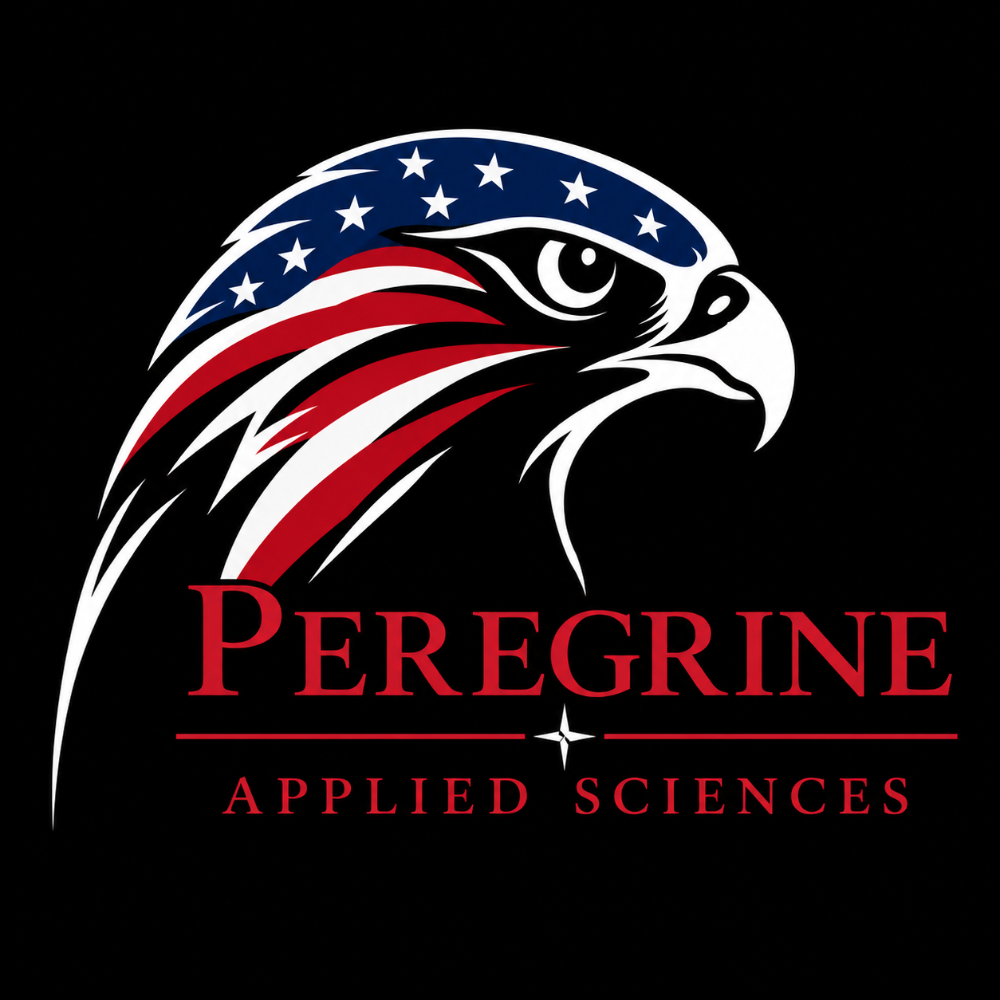
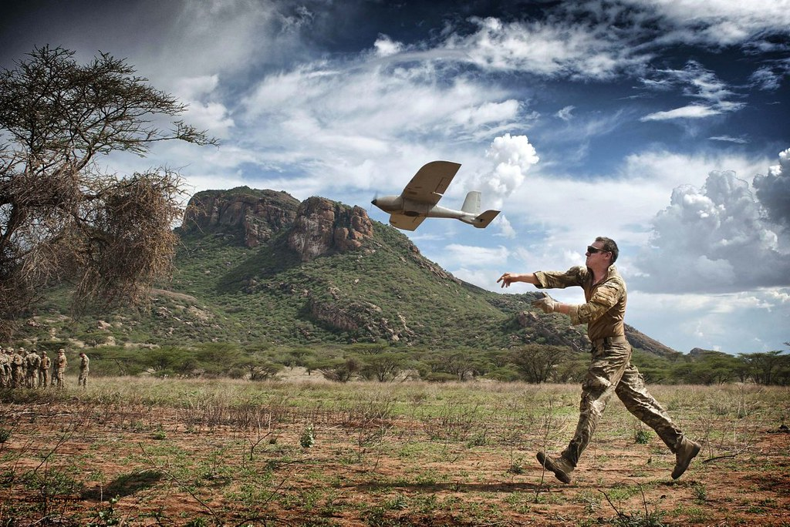
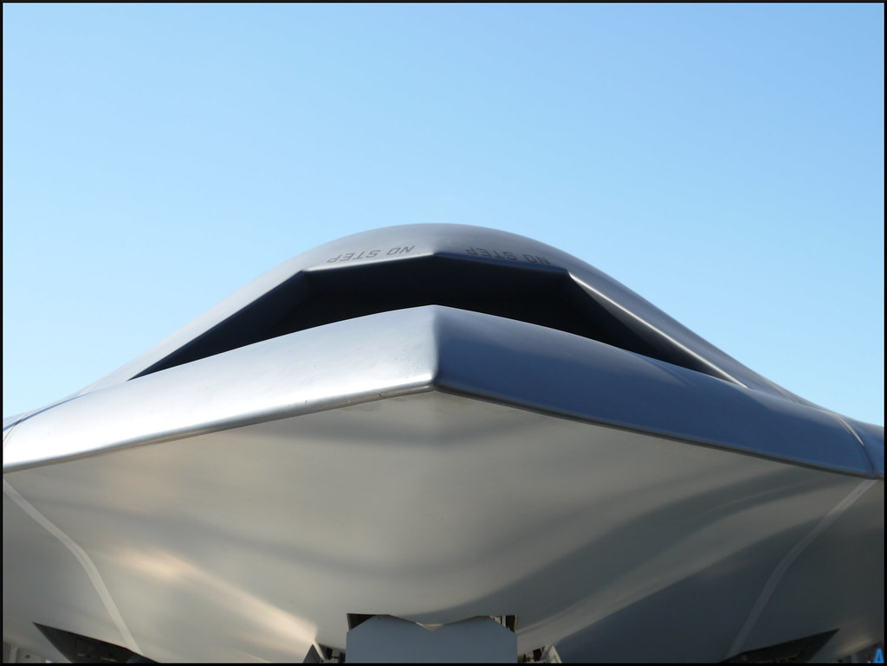
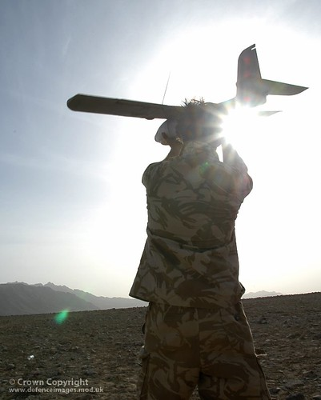

RF Systems Engineering
Link budgets, propagation, antenna integration, RF architecture, coexistence, filtering, and system verification.


RF SYSTEMS // AEROSPACE // C2 // AUTONOMOUS SYSTEMS
Peregrine Applied Sciences develops advanced RF, aerospace, command-and-control, autonomous systems, and general engineering solutions for demanding civil, government, and defense missions.
PLATFORMS / PACN-01
PACN-01 is an RF-first airborne communications platform designed to extend or restore connectivity across terrain, disaster zones, temporary command areas, and other infrastructure-limited environments.
| PARAMETER | BASELINE | OBJECTIVE | STATUS |
|---|---|---|---|
| Payload Capacity | ≥5 lb | ≥10 lb | PRELIMINARY |
| Endurance | 6 hr | 12+ hr | PRELIMINARY |
| Development Band | 902–928 MHz | Mission-configurable RF modules | LOCKED |
| Payload Power | 100 W | 250 W | PRELIMINARY |
| Development Altitude | 100–400 ft AGL | 1,000–3,000 ft AGL | LOCKED / PRELIMINARY |
CAPABILITIES
Peregrine combines RF, avionics, systems engineering, test, and general engineering disciplines to move complex hardware from requirements through validation.
Link budgets, propagation, antenna integration, RF architecture, coexistence, filtering, and system verification.
Distributed communications, mission-data transport, edge mission computing, network-state monitoring, and operator decision support.
Aircraft electronics, data links, mission systems, interface definition, troubleshooting, hardware integration, and verification.
Electrical, embedded, mechanical-interface, requirements, test, failure analysis, documentation, and systems-engineering support.
Mission logic combining RF state, network priorities, platform state, and operating constraints to drive adaptive positioning.
Bench integration, instrumentation, test planning, field evaluation, model correlation, and disciplined engineering reporting.

DESIGN LANGUAGE
RESEARCH
Development of modular airborne RF relay, resilient communications, link-state monitoring, mission computing, and communications-aware autonomous positioning.
Peregrine's future R2 research line is intended to explore advanced non-kinetic mission effects and electronic systems supporting distributed C2, sensing, resilient communications, and autonomous platforms.
Peregrine is actively looking toward the 2028 DARPA Lift Challenge as a major future development target for high-performance unmanned aircraft, systems integration, propulsion, controls, and test.

Peregrine is structured around measurable technical risk reduction and rapid maturation of hardware and mission systems.
FOUNDERS
Austin is an electrical engineering student and Air Force veteran with experience in F-16 avionics, flightline systems, tactical data-link engineering, RF test, and CDLS engineering.
He is driven by hands-on technology development and independent engineering work. His InjecLab project reflects that approach: using real hardware, experimentation, and disciplined technical iteration to turn an idea into a working engineering system.
Raul brings 13 years of U.S. Army experience and an extensive operational RF background. He began his Army career in the infantry and later served as a retransmission operator.
His experience spans field communications, radio networks, retransmission, terrain-driven coverage challenges, and the operational realities of maintaining connectivity in demanding environments.
FEDERAL READINESS
Peregrine is actively building the registrations, compliance foundation, and operating infrastructure required to support federal customers. SDVOSB certification is not yet finalized.
CONTACT
RF // AEROSPACE // C2 // AUTONOMOUS SYSTEMS // GENERAL ENGINEERING
info@peregrineappliedsciences.com